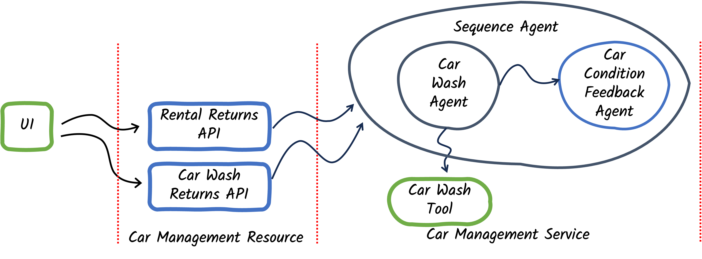
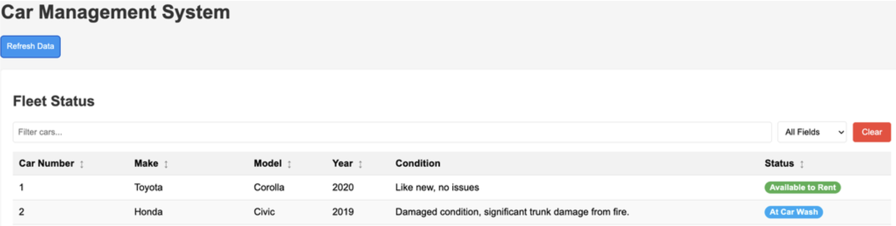

Step 02 - Composing Simple Agent Workflows
New Requirement: Track Car Conditions
The Miles of Smiles management team now wants to keep track of the condition of each car in their fleet.
Currently, when cars are returned (either from rentals or from the car wash), feedback is provided but not systematically recorded. Management wants the system to:
- Automatically analyze feedback from both rental returns and car wash returns
- Update the car’s condition based on this feedback
- Display the current condition in the fleet management UI
In this step, you’ll learn how to compose multiple agents into workflows that work together to solve more complex problems.
Note
Workflows are pattern to compose agents with limited autonomy as you defined the control flow (when each agent is called). This is different from the supervisor pattern where a special agent determines when to call sub-agents.
What You’ll Learn
In this step, you will:
- Understand the different types of agentic workflows (sequence, parallel, loop, conditional)
- Build a sequence workflow that runs agents one after another
- Learn about AgenticScope, the shared context that enables agents to pass data between each other
- Use the declarative workflow API with annotations
- See how to extract and use results from multi-agent workflows
Understanding Workflows
With Quarkus LangChain4j, you can compose multiple agents to work together as a team.
Much like the building blocks of a programming language, quarkus-langchain4j-agentic provides constructs to build different types of workflows:
| Workflow Type | Description | Use Case |
|---|---|---|
| Sequence | Agents execute one after another in order | When Agent B needs the output from Agent A |
| Parallel | Agents execute simultaneously on separate threads | When agents can work independently for faster execution |
| Loop | Agents run repeatedly until a condition is met | When iterative refinement is needed |
| Conditional | Agents only execute if a condition is satisfied | When different paths are needed based on context |
In this step, we’ll use a sequence workflow to:
- First, run the
CarWashAgentto determine if washing is needed - Then, run the
CarConditionFeedbackAgentto update the car’s condition
Understanding AgenticScope
To enable agents to work together, they need a way to share data.
This is where AgenticScope comes in.
What is AgenticScope?
- A shared context that keeps track throughout a workflow execution.
- Contains a map of key-value pairs that agents can read from and write to: the state.
- This state is automatically populated with inputs from the workflow method signature.
- This state is automatically updated with outputs from each agent using their
outputName.
How It Works:
graph LR
A[Workflow Inputs] -->|Populate| B[AgenticScope]
B -->|Read state| C[Agent 1]
C -->|Write state| B
B -->|Read state| D[Agent 2]
D -->|Write state| B
B -->|Extract| E[Workflow Result]When an agent completes, its result is stored in the AgenticScope’s state using the outputName specified in the @Agent annotation.
The next agent in the workflow can access this value as an input parameter using the name specified in the outputName annotation.
What Are We Going to Build?

We’ll enhance the car management system with:
- CarConditionFeedbackAgent: Analyzes feedback to determine the current condition of a car
- CarProcessingWorkflow: A sequence workflow that orchestrates the car wash agent and condition feedback agent
- Updated UI: Displays the current condition of each car
The Flow:
sequenceDiagram
participant User
participant Workflow as CarProcessingWorkflow
participant Agent1 as CarWashAgent
participant Agent2 as CarConditionFeedbackAgent
participant Scope as AgenticScope
User->>Workflow: processCarReturn(carInfo, feedback)
Workflow->>Scope: Store inputs (carMake, feedback, etc.)
Workflow->>Agent1: Execute
Agent1->>Scope: Read inputs
Agent1->>Scope: Write output (carWashAgentResult)
Workflow->>Agent2: Execute
Agent2->>Scope: Read inputs (including carWashAgentResult)
Agent2->>Scope: Write output (carCondition)
Workflow->>Scope: Extract results
Workflow->>User: Return CarConditionsPrerequisites
Before starting:
- Completed Step 01 (or have the
section-2/step-01code available) - Application from Step 01 is stopped (Ctrl+C)
Option 1: Continue from Step 01
If you want to continue building on your Step 01 code, you’ll need to copy some updated UI files from step-02:
cd section-2/step-01
cp ../step-02/src/main/resources/static/css/styles.css ./src/main/resources/static/css/styles.css
cp ../step-02/src/main/resources/static/js/app.js ./src/main/resources/static/js/app.js
cp ../step-02/src/main/resources/import.sql ./src/main/resources/import.sql
cp ../step-02/src/main/resources/templates/index.html ./src/main/resources/templates/index.html
cp ../step-02/src/main/java/com/carmanagement/model/CarInfo.java ./src/main/java/com/carmanagement/model/CarInfo.java
cd section-2\step-01
copy ..\step-02\src\main\resources\static\css\styles.css .\src\main\resources\static\css\styles.css
copy ..\step-02\src\main\resources\static\js\app.js .\src\main\resources\static\js\app.js
copy ..\step-02\src\main\resources\templates\index.html .\src\main\resources\templates\index.html
copy ..\step-02\src\main\resources\import.sql .\src\main\resources\import.sql
copy ..\step-02\src\main\java\com\carmanagement\model\CarInfo.java .\src\main\java\com\carmanagement\model\CarInfo.java
These files add the “Condition” column to the UI and update the data model to track car conditions.
Option 2: Start Fresh from Step 02
Alternatively, navigate to the complete section-2/step-02 directory:
Step 1: Create the CarConditionFeedbackAgent
Create a new agent that analyzes feedback to determine a car’s current condition.
In src/main/java/com/carmanagement/agentic/agents, create CarConditionFeedbackAgent.java:
package com.carmanagement.agentic.agents;
import dev.langchain4j.service.SystemMessage;
import dev.langchain4j.service.UserMessage;
import dev.langchain4j.service.V;
import dev.langchain4j.agentic.Agent;
/**
* Agent that analyzes feedback to update the car condition.
*/
public interface CarConditionFeedbackAgent {
@SystemMessage("""
You are a car condition analyzer for a car rental company. Your job is to determine the current condition of a car based on feedback.
Analyze all feedback and the previous car condition to provide an updated condition description.
Always provide a concise condition description, even if there's minimal feedback.
Do not add any headers or prefixes to your response.
""")
@UserMessage("""
Car Information:
Make: {carMake}
Model: {carModel}
Year: {carYear}
Previous Condition: {carCondition}
Rental Feedback: {rentalFeedback}
Car Wash Feedback: {carWashFeedback}
""")
@Agent(outputName = "carCondition",
description = "Car condition analyzer. Determines the current condition of a car based on feedback.")
String analyzeForCondition(
String carMake,
String carModel,
Integer carYear,
Long carNumber,
String carCondition,
String rentalFeedback,
String carWashFeedback);
}
Let’s break it down:
@SystemMessage
Defines the agent’s role as a car condition analyzer:
- Analyzes feedback to determine current condition
- Considers the previous condition when making assessments
- Provides concise condition descriptions
- Does not add headers or prefixes (for clean output)
@UserMessage
Provides all the context needed:
- Car details:
{carMake},{carModel},{carYear} - Previous condition:
{carCondition}— allows the agent to understand changes - Feedback from multiple sources:
{rentalFeedback},{carWashFeedback}
@Agent with outputName
Notice the new outputName parameter:
This tells the framework to store the agent’s result in the AgenticScope’s state under the key "carCondition".
Other agents or the workflow can then access this value.
Step 2: Create the CarConditions Model
Before creating the workflow, we need a data model to return both the car condition and whether a car wash is required.
In src/main/java/com/carmanagement/model, create CarConditions.java:
package com.carmanagement.model;
/**
* Record representing the conditions of a car.
*
* @param generalCondition A description of the car's general condition
* @param carWashRequired Indicates if a car wash is required
*/
public record CarConditions(String generalCondition, boolean carWashRequired) {
}
This simple record combines the results from both agents in our workflow.
Step 3: Update the CarWashAgent
The CarWashAgent needs to specify an outputName so its result can be accessed by the workflow.
Update src/main/java/com/carmanagement/agentic/agents/CarWashAgent.java:
package com.carmanagement.agentic.agents;
import com.carmanagement.agentic.tools.CarWashTool;
import dev.langchain4j.service.SystemMessage;
import dev.langchain4j.service.UserMessage;
import dev.langchain4j.service.V;
import dev.langchain4j.agentic.Agent;
import io.quarkiverse.langchain4j.ToolBox;
/**
* Agent that determines what car wash services to request.
*/
public interface CarWashAgent {
@SystemMessage("""
You handle intake for the car wash department of a car rental company.
""")
@UserMessage("""
Taking into account all provided feedback, determine if the car needs a car wash.
If the feedback indicates the car is dirty, has stains, or any other cleanliness issues,
call the provided tool and recommend appropriate car wash services (exterior wash, interior cleaning, waxing, detailing).
Be specific about what services are needed.
If no car wash is needed based on the feedback, respond with "CARWASH_NOT_REQUIRED".
Car Information:
Make: {carMake}
Model: {carModel}
Year: {carYear}
Car Number: {carNumber}
Feedback:
Rental Feedback: {rentalFeedback}
Car Wash Feedback: {carWashFeedback}
""")
@Agent(outputName = "carWashAgentResult",
description = "Car wash specialist. Determines what car wash services are needed.")
@ToolBox(CarWashTool.class)
String processCarWash(
String carMake,
String carModel,
Integer carYear,
Long carNumber,
String rentalFeedback,
String carWashFeedback);
}
Key change:
In the @Agent annotation, adds outputName = "carWashAgentResult" to the @Agent annotation. This stores the agent’s response in the AgenticScope’s state, making it available to subsequent agents and the workflow output method.
Step 4: Create the Workflow Directory
If continuing from Step 01, create the workflow directory:
Step 5: Define the CarProcessingWorkflow
Now, create the workflow that orchestrates both agents.
In src/main/java/com/carmanagement/agentic/workflow, create CarProcessingWorkflow.java:
package com.carmanagement.agentic.workflow;
import com.carmanagement.agentic.agents.CarConditionFeedbackAgent;
import com.carmanagement.agentic.agents.CarWashAgent;
import com.carmanagement.model.CarConditions;
import dev.langchain4j.agentic.declarative.Output;
import dev.langchain4j.agentic.declarative.SequenceAgent;
import dev.langchain4j.agentic.declarative.SubAgent;
/**
* Workflow for processing car returns using a sequence of agents.
*/
public interface CarProcessingWorkflow {
/**
* Processes a car return by running feedback analysis and then appropriate actions.
*/
@SequenceAgent(outputName = "carConditions", subAgents = {
@SubAgent(type = CarWashAgent.class, outputName = "carWashAgentResult"),
@SubAgent(type = CarConditionFeedbackAgent.class, outputName = "carCondition")
})
CarConditions processCarReturn(
String carMake,
String carModel,
Integer carYear,
Long carNumber,
String carCondition,
String rentalFeedback,
String carWashFeedback);
@Output
static CarConditions output(String carCondition, String carWashAgentResult) {
boolean carWashRequired = !carWashAgentResult.toUpperCase().contains("NOT_REQUIRED");
return new CarConditions(carCondition, carWashRequired);
}
}
Let’s break it down:
@SequenceAgent Annotation
This annotation defines a sequence workflow:
@SequenceAgent(
outputName = "carConditions",
subAgents = {
@SubAgent(type = CarWashAgent.class, outputName = "carWashAgentResult"),
@SubAgent(type = CarConditionFeedbackAgent.class, outputName = "carCondition")
}
)
outputName: Where to store the final workflow result inAgenticScope’s statesubAgents: The list of agents to execute in order- Agent 1:
CarWashAgent: determines if washing is needed - Agent 2:
CarConditionFeedbackAgent: updates the car condition
The agents execute sequentially: CarWashAgent → CarConditionFeedbackAgent
Method Signature
The workflow method signature defines all the inputs needed by any agent in the workflow:
CarConditions processCarReturn(
String carMake,
String carModel,
Integer carYear,
Integer carNumber,
String carCondition,
String rentalFeedback,
String carWashFeedback
)
These parameters are automatically populated into the AgenticScope when the workflow is invoked.
@Output
The output method defines how to extract the final result from the AgenticScope’s state:
@Output
static CarConditions output(String carCondition, String carWashAgentResult) {
boolean carWashRequired = !carWashAgentResult.toUpperCase().contains("NOT_REQUIRED");
return new CarConditions(carCondition, carWashRequired);
}
How it works:
- The method parameters (
carCondition,carWashAgentResult) are automatically extracted from theAgenticScopeby matching their names with theoutputNamevalues from the agents - The method processes these values (in this case, checking if a car wash is required)
- Returns a
CarConditionsobject combining both results
This is more powerful than just returning the last agent’s result: you can combine outputs from multiple agents!
Step 6: Update the CarManagementService
Now update the service to use the workflow instead of calling agents directly.
Update src/main/java/com/carmanagement/service/CarManagementService.java:
// --8<-- [start:part1]
package com.carmanagement.service;
import com.carmanagement.agentic.workflow.CarProcessingWorkflow;
import com.carmanagement.model.CarConditions;
import com.carmanagement.model.CarInfo;
import com.carmanagement.model.CarStatus;
import jakarta.enterprise.context.ApplicationScoped;
import jakarta.inject.Inject;
import jakarta.transaction.Transactional;
/**
* Service for managing car returns from various operations.
*/
@ApplicationScoped
public class CarManagementService {
/**
* Enum representing the type of agent to be selected for car processing
*/
public enum AgentType {
CAR_WASH,
NONE
}
@Inject
CarProcessingWorkflow carProcessingWorkflow;
/**
* Process a car return from any operation.
*
* @param carNumber The car number
* @param rentalFeedback Optional rental feedback
* @return Result of the processing
*/
@Transactional
public String processCarReturn(Long carNumber, String rentalFeedback, String carWashFeedback) {
CarInfo carInfo = CarInfo.findById(carNumber);
if (carInfo == null) {
return "Car not found with number: " + carNumber;
}
// Process the car return using the workflow and get the AgenticScope
CarConditions carConditions = carProcessingWorkflow.processCarReturn(
carInfo.make,
carInfo.model,
carInfo.year,
carNumber,
carInfo.condition,
rentalFeedback != null ? rentalFeedback : "",
carWashFeedback != null ? carWashFeedback : "");
// Update the car's condition with the result from CarConditionFeedbackAgent
carInfo.condition = carConditions.generalCondition();
// If carwash was not required, make the car available to rent
if (!carConditions.carWashRequired()) {
carInfo.status = CarStatus.AVAILABLE;
}
carInfo.persist();
return carConditions.generalCondition();
}
}
What changed?
Injection
The workflow interface is injected just like any other CDI bean. Quarkus LangChain4j generates the implementation automatically.
Workflow Invocation
CarConditions carConditions = carProcessingWorkflow.processCarReturn(
carInfo.make,
carInfo.model,
carInfo.year,
carNumber,
carInfo.condition,
rentalFeedback != null ? rentalFeedback : "",
carWashFeedback != null ? carWashFeedback : ""
);
Instead of calling agents individually, we call the workflow.
It returns a CarConditions object containing results from both agents.
Using the Results
// Update the car's condition with the result from CarConditionFeedbackAgent
carInfo.condition = carConditions.generalCondition();
// If carwash was not required, make the car available to rent
if (!carConditions.carWashRequired()) {
carInfo.status = CarStatus.AVAILABLE;
}
We extract both the updated condition and whether a car wash is required, then update the car accordingly.
Try It Out
Start the application:
Open your browser to http://localhost:8080.
Notice the New UI
The Fleet Status section now has a “Condition” column showing each car’s current state:

Test the Workflow
Enter feedback that indicates a problem with a car:
Click Return.
What happens?
- The
CarWashAgentanalyzes the feedback and likely requests cleaning (interior/exterior) - The
CarConditionFeedbackAgentanalyzes the feedback and updates the condition to reflect fire damage - The car’s status is updated to
AT_CAR_WASH - The Condition column in the Fleet Status updates to show the new condition
Check the Logs
You should see both agents executing in sequence:
🚗 CarWashTool result: Car wash requested for Toyota Camry (2021), Car #4:
- Interior cleaning
- Exterior wash
Additional notes: Fire damage requires thorough cleaning
[CarConditionFeedbackAgent response]: Fire damage in trunk, requires inspection and repair
Notice how the workflow coordinated both agents automatically!
How Data Flows Through the Workflow
Let’s trace a complete example:
Example: “Fire in the trunk”
sequenceDiagram
participant Service as CarManagementService
participant Workflow as CarProcessingWorkflow
participant Scope as AgenticScope
participant Agent1 as CarWashAgent
participant Agent2 as CarConditionFeedbackAgent
Service->>Workflow: processCarReturn(carMake="Toyota", ..., rentalFeedback="fire in trunk")
Note over Workflow: Initialize AgenticScope
Workflow->>Scope: Store all inputs: {carMake: "Toyota", rentalFeedback: "fire in trunk", ...}
Note over Workflow: Execute Agent 1
Workflow->>Agent1: processCarWash()
Agent1->>Scope: Read inputs (carMake, rentalFeedback, etc.)
Agent1->>Agent1: Analyze: Fire damage → needs cleaning
Agent1->>Scope: Write output: {carWashAgentResult: "Wash requested..."}
Note over Workflow: Execute Agent 2
Workflow->>Agent2: analyzeForCondition()
Agent2->>Scope: Read inputs (carMake, rentalFeedback, carWashAgentResult, etc.)
Agent2->>Agent2: Analyze: Fire damage → serious condition issue
Agent2->>Scope: Write output: {carCondition: "Fire damage in trunk"}
Note over Workflow: Call @Output method
Workflow->>Scope: Extract carCondition and carWashAgentResult
Workflow->>Workflow: output("Fire damage in trunk", "Wash requested...")
Workflow->>Service: return CarConditions(generalCondition="Fire damage in trunk", carWashRequired=true)
Service->>Service: Update car condition and statusKey Points:
- All workflow inputs are stored in
AgenticScope’s state - Each agent reads what it needs from the scope’s state
- Each agent writes its result back to the scope’s state using its
outputName - The
@Outputmethod extracts specific values from the scope to build the final result
Understanding the Declarative Workflow API
The declarative API uses annotations to define workflows, making them:
- Type-safe: Compile-time checking of agent interfaces
- Readable: Clear structure showing the flow
- Composable: Easily combine different agents even workflow-based agents
- Maintainable: Easy to add/remove/reorder agents
- Automatic: No manual AgenticScope management
Key Takeaways
- Workflows enable collaboration: Multiple agents work together to solve complex problems
- AgenticScope enables data sharing: Agents pass data through a shared context without tight coupling
- Sequence workflows run in order: Perfect when Agent B needs Agent A’s output
- The declarative API is powerful: Annotate interfaces, get automatic implementations
- Type safety matters: The compiler helps catch errors before runtime
Experiment Further
1. Inspect the AgenticScope
Try adding different types of feedback and observe how both agents respond. Notice how they’re working with the same context!
2. Add More Input to the Condition Agent
What if you wanted to pass the car’s mileage to the condition agent? How would you:
- Add it to the workflow method signature?
- Add it to the agent’s method signature?
- Update the service to provide the mileage?
3. Try Different Feedback Combinations
Test these scenarios:
How does the condition agent synthesize feedback from multiple sources?
Understanding Parallel vs. Sequence
Why Sequence Instead of Parallel?
You might notice that CarConditionFeedbackAgent doesn’t actually use the output from CarWashAgent, it only looks at the original feedback.
This means these agents could run in parallel for better response time.
We chose a sequence workflow in this step because:
- It’s simpler to understand as your first workflow
- It sets us up for Step 03, where we’ll add more agents that DO depend on each other
Feel free to try converting this to a parallel workflow as an experiment! Replace @SequenceAgent with @ParallelAgent and see what happens.
Troubleshooting
Error: Cannot find symbol ‘CarConditions’
Make sure you created the CarConditions.java record in the com.carmanagement.model package.
Workflow not updating car condition
Check that:
- The
CarWashAgenthasoutputName = "carWashAgentResult" - The
CarConditionFeedbackAgenthasoutputName = "carCondition" - The
@Outputmethod parameter names match these output names exactly
UI not showing Condition column
Make sure you copied the updated UI files from step-02 (see “Option 1: Continue from Step 01” section above)
What’s Next?
You’ve successfully built your first multi-agent workflow!
You learned how agents collaborate through AgenticScope and how sequence workflows coordinate their execution.
In Step 03, you’ll learn about nested workflows, combining sequence, parallel, and conditional workflows to build sophisticated agent systems!